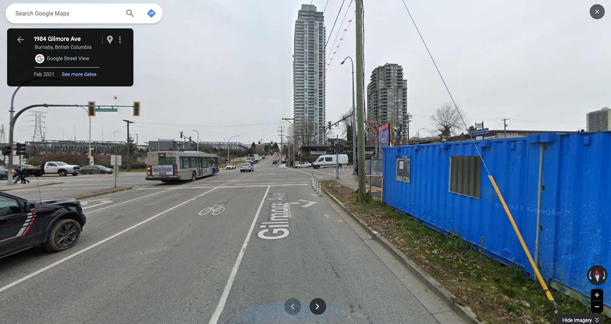
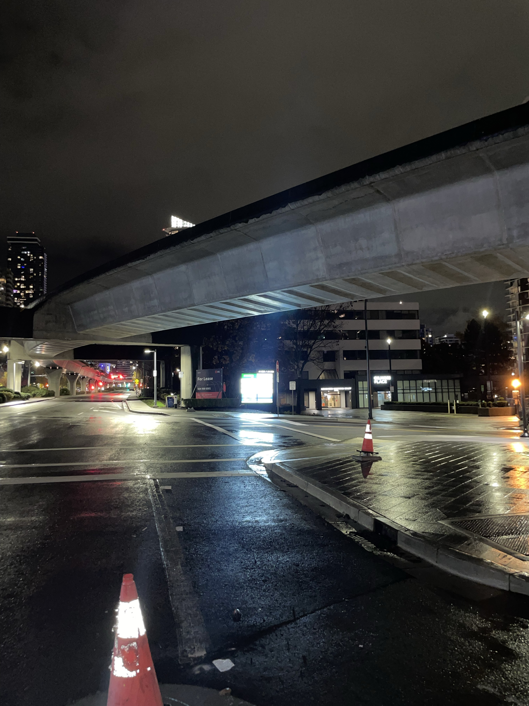
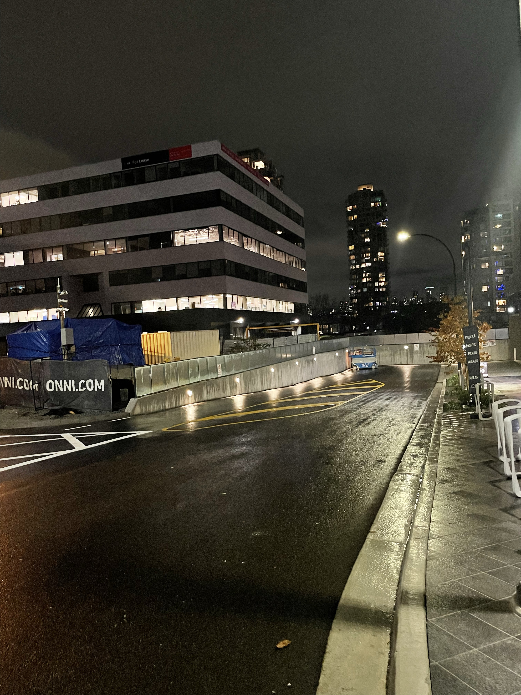
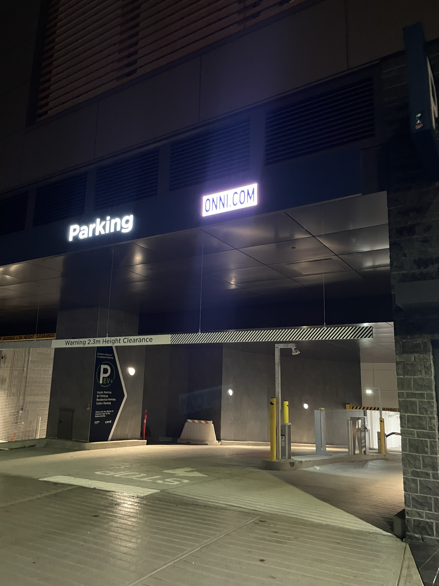
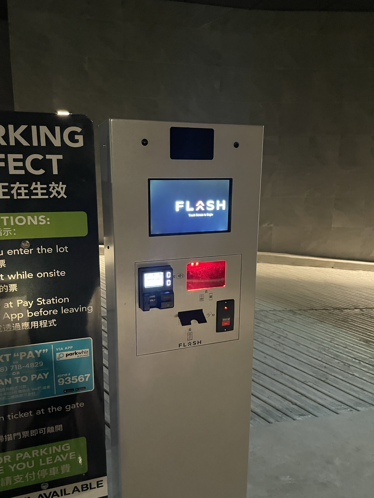
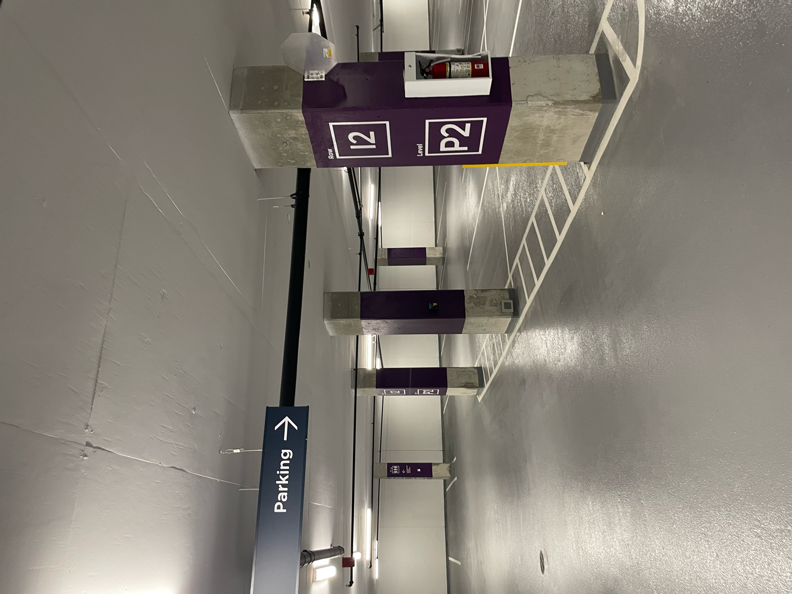
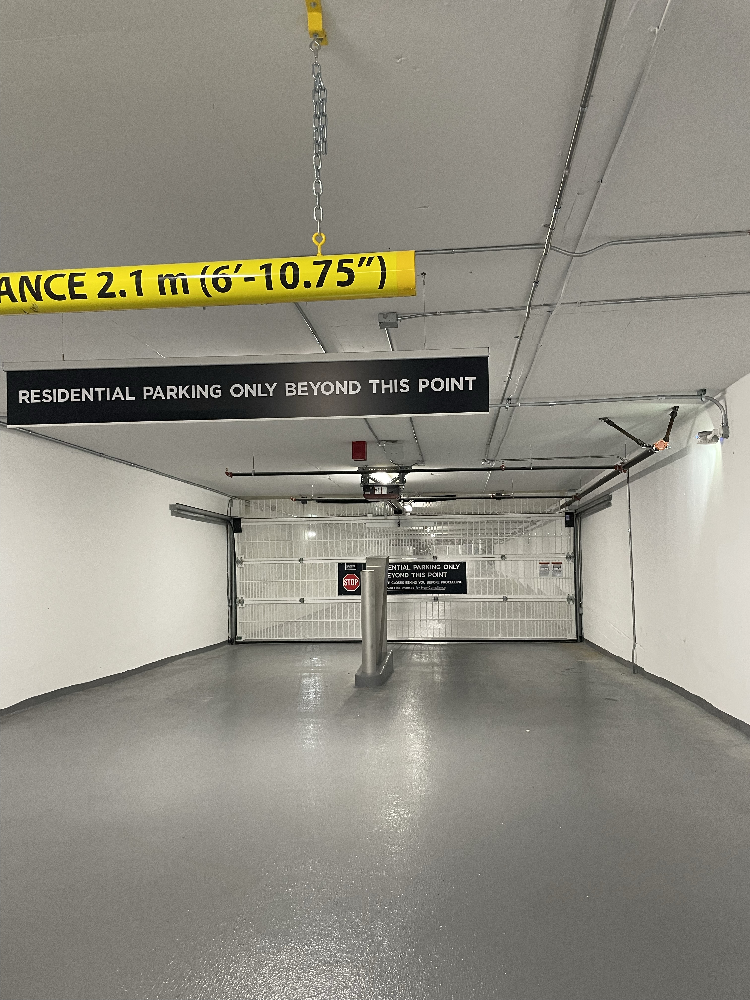
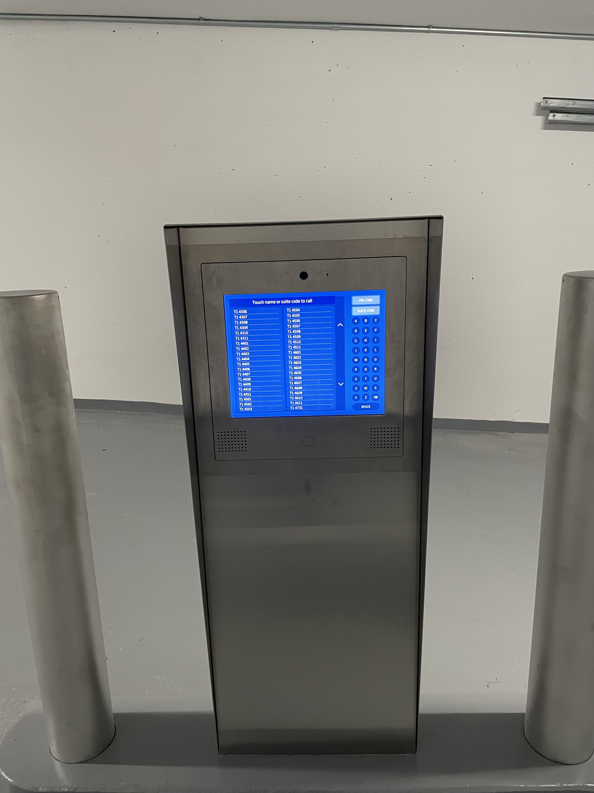
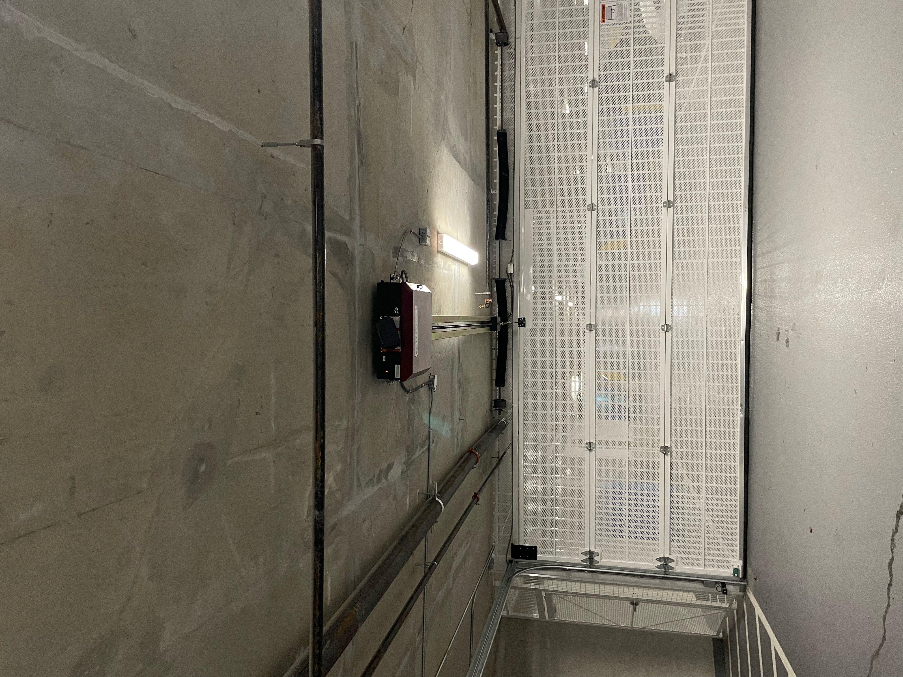
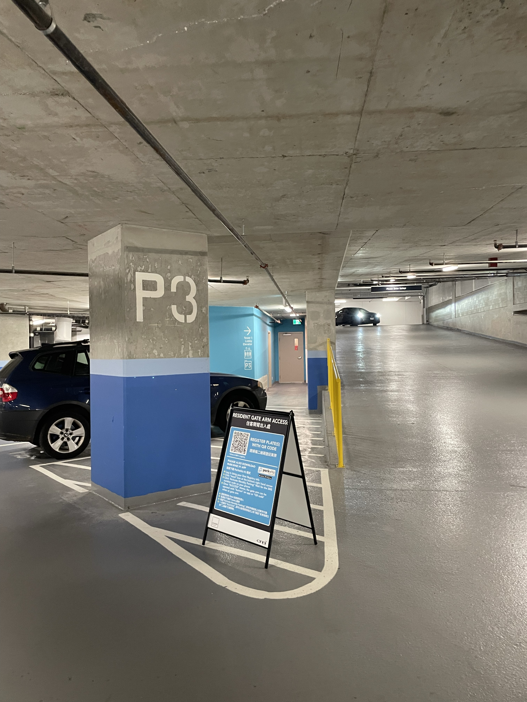

Instructions to Visitor Parking
-
From Gilmore station, go straight.

-
Turn right at the first intersection.

-
Take the next available right turn (Turn right at the Lougheed Highway).

-
Continue straight.

-
Enter through the “Parking” entrance.

-
From the machine labeled "Flash," choose "English" and then "Get a ticket."

-
When you see purple color stalls, keep turning right until you reach P3 (Visitor Parking).

-
Continue turning right until you arrive here.

-
At the screen, find "T1 4403" and I'll open the gate. Then go inside the visitor parking.

-
After you enter the visitor parking, take a left and keep going straight. You will see a gate on your right. Park near the gate. Then look for the red sensor on the ceiling near the gate, and wave at it until it opens.

-
After passing the gate, walk straight to the elevator doors.

-
Once here, DM Min or Matina (If you have any trouble, join the public wifi which is literally named "public wifi" and DM us).

-
When leaving the building, go straight to the gate you waved to before.
There’s a white door on the right side of the gate; enter visitor parking through that white door.
Then, find this validation machine, scan your ticket and you’ll have 20 minutes to exit the building.
With your car, find the gate you entered with your car. Keep turning left until you reach the exit.
Thanks for coming to the birthday party! 🥳🫶❤️